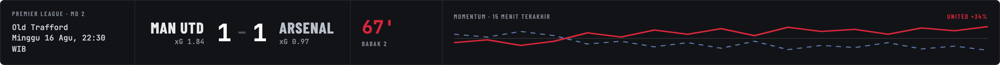
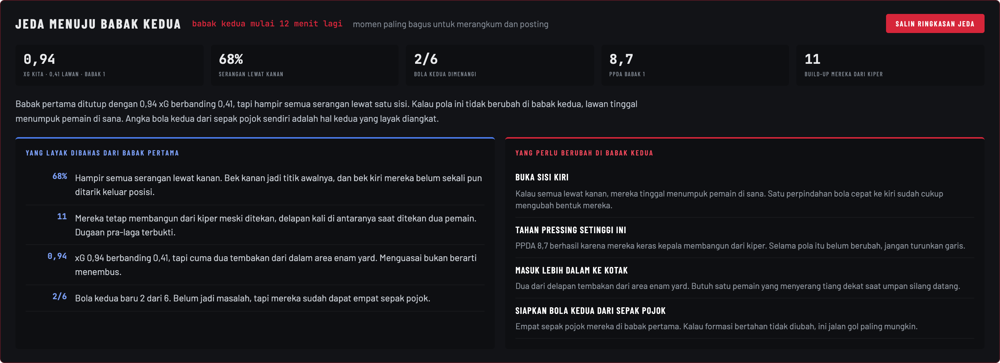
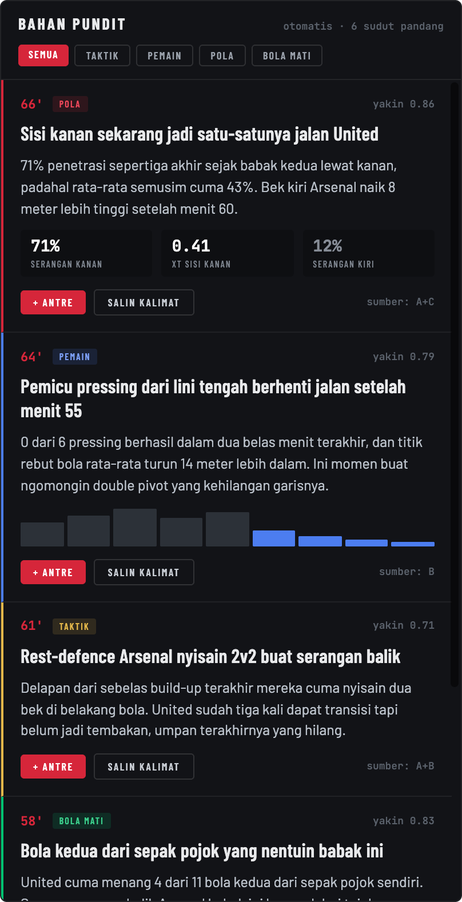
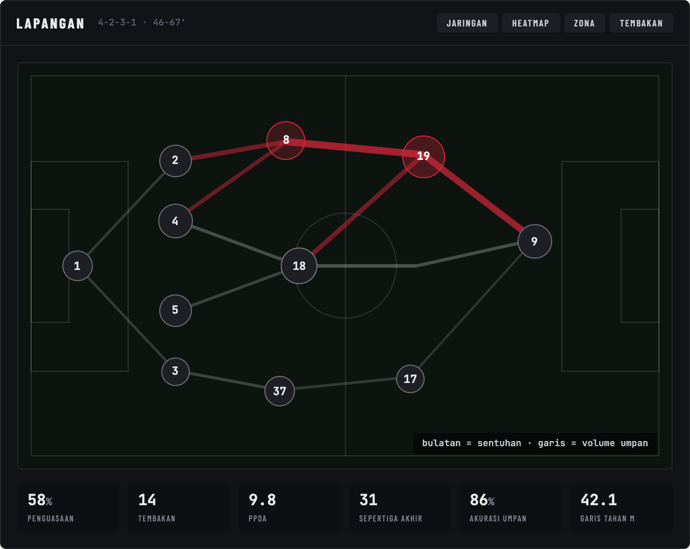
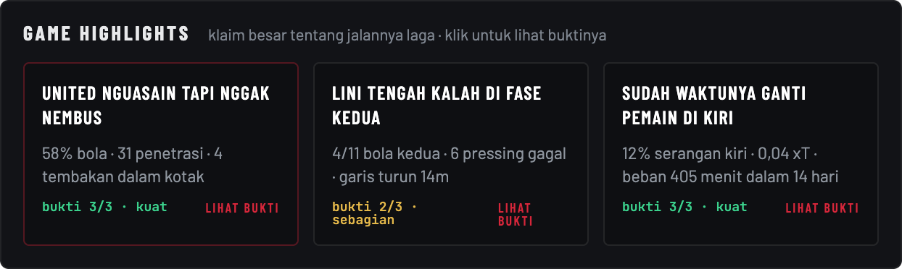
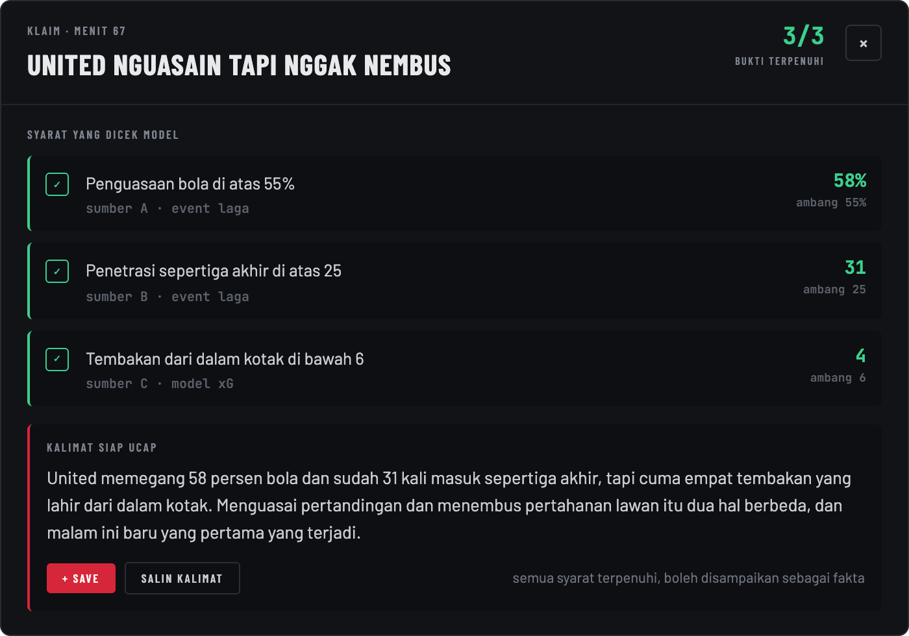
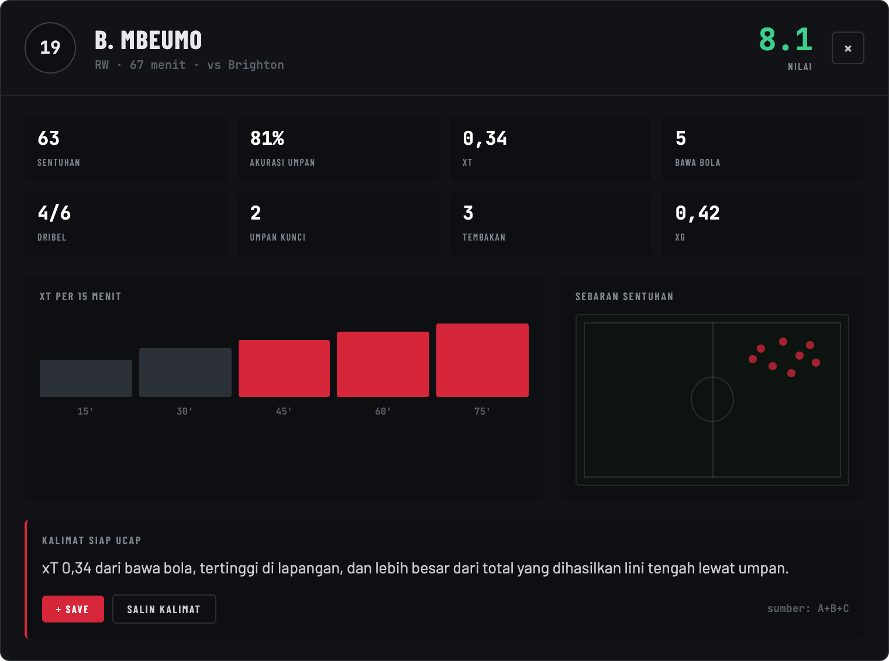
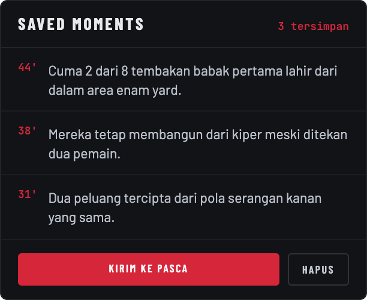

Strip pertandingan · paling atas

Apa ini. Identitas laga, skor, xG kedua tim, menit berjalan, dan bar momentum lima belas menit terakhir.
Gunanya. Menjawab pertanyaan yang paling sering muncul di kolom komentar: skornya imbang, tapi sebenarnya siapa yang lebih pantas menang. Selisih xG dan arah momentum menjawab itu dalam satu lirikan.
Kenapa di situ. Melebar penuh di paling atas karena ini konteks untuk semua panel di bawahnya. Angka apa pun yang kamu sebut nanti selalu relatif terhadap skor dan menit.
Tampilan jeda

Apa ini. Saat jeda babak atau jeda sebelum extra time, strip berganti jadi panel ringkasan: hitung mundur ke babak berikutnya, lima angka penentu babak yang baru selesai, yang layak dibahas, dan yang perlu berubah.
Gunanya. Jeda adalah waktu bicara paling panjang dalam siaran, dan satu-satunya waktu yang cukup untuk posting. Panel ini menyiapkan bahan untuk keduanya, dan isinya menyesuaikan fase: di jeda babak fokusnya babak pertama, di jeda extra time fokusnya beban menit dan kandidat rotasi.
Kenapa di situ. Menggantikan strip di posisi yang sama, bukan muncul sebagai panel baru di bawah, supaya mata tidak perlu mencari. Saat jeda tidak ada event masuk, jadi ruang paling atas lebih berguna untuk merangkum daripada memantau.
Bahan Pundit · kolom kiri

Apa ini. Inti dari seluruh console. Bukan tumpukan angka, tapi kalimat siap ucap: satu klaim sebagai judul, satu paragraf penjelasan, angka pendukung, dan kode sumber di pojok tiap kartu.
Gunanya. Saat siaran kamu tidak punya waktu menafsirkan tabel. Panel ini sudah melakukan penafsirannya, kamu tinggal menyampaikan dengan gaya sendiri.
Cara baca. Tag di tiap kartu menandai jenis temuannya: POLA, BEBAN, TEMPO, BOLA MATI, PRESSING. Chip di atas panel menyaring per tag. Tombol + Save menyimpan kartu itu ke Saved Moments, tombol Salin kalimat menyalin kalimatnya ke papan klip untuk dipakai di caption.
Kenapa di situ. Kolom paling kiri dan bisa digulir sendiri. Mata membaca dari kiri, jadi di sinilah tempat satu-satunya hal yang benar-benar kamu baca sepanjang pertandingan. Tombol simpan ada di tiap kartu supaya menyimpan bahan tidak memutus fokus nonton.
Lapangan & empat lapisan · kolom tengah

Apa ini. Satu lapangan dengan empat cara membaca, tombolnya di kanan atas panel: posisi rata-rata, jaringan umpan, sentuhan, dan tekanan. Bulatan adalah pemain, tebal garis mengikuti volume umpan antar pasangan.
Gunanya. Bukti visual untuk klaim yang barusan kamu baca di kolom kiri. Kalau kamu bilang serangan cuma lewat kanan, lapisan sentuhan membuktikannya dalam dua detik dan enak dijadikan tangkapan layar untuk konten.
Bisa diklik. Setiap bulatan pemain membuka detail permainannya. Nama di panel Skuad membuka dialog yang sama.
Kenapa di situ. Di tengah dan paling besar, karena ini satu-satunya panel yang bentuknya harus dilihat, bukan dibaca. Empat lapisan ditumpuk di satu lapangan supaya perbandingannya terjadi di tempat yang sama.
Game Highlights

Apa ini. Klaim besar tentang jalannya pertandingan, bukan kejadian tunggal. Tiap kartu menyebut berapa syarat buktinya yang sudah terpenuhi: 3/3 kuat berarti boleh disampaikan sebagai fakta, 2/3 sebagian berarti sampaikan sebagai dugaan.
Gunanya. Bahan Pundit memberi detail per momen, panel ini memberi narasi besarnya. Ini yang dipakai kalau kamu diminta menyimpulkan pertandingan dalam satu kalimat. Isinya berganti mengikuti fase laga: babak pertama, jeda, babak kedua, menjelang extra time.
Bisa diklik. Klik kartu mana pun untuk melihat rincian buktinya.
Kenapa di situ. Di bawah lapangan, di jalur baca yang sama, karena narasi besar biasanya baru dibutuhkan setelah melihat bukti visualnya.
Dialog bukti klaim

Apa ini. Isi dari rasio 3/3 atau 2/3. Tiap syarat yang diperiksa model ditampilkan lengkap: nilai sebenarnya, ambang yang dipakai, sumber datanya, dan apakah terpenuhi.
Gunanya. Kalau ada yang bertanya dasarnya apa, jawabannya ada di sini dalam bentuk angka, bukan kesan. Di bawahnya ada kalimat siap ucap plus catatan cara menyampaikannya: fakta kalau semua syarat terpenuhi, dugaan kalau ada yang belum.
Kenapa dialog. Rincian sebanyak ini akan menenggelamkan halaman kalau ditampilkan terus-menerus. Dibuka saat perlu, ditutup begitu selesai, dan posisi gulir halaman tidak berubah.
Dialog detail pemain

Apa ini. Rincian permainan satu pemain sepanjang laga: menit, nilai, metrik utama, sebaran aksi di lapangan, grafik per 15 menit, dan satu kalimat kesimpulan yang bisa langsung diucapkan.
Cara baca. Metriknya berbeda per posisi. Kiper dinilai dari penyelamatan dan aksi kiper, bek tengah dari aksi bertahan, bek sayap dan gelandang dari keterlibatan, penyerang dan sayap dari xT. Jadi jangan membandingkan angka antar posisi di dialog ini.
Cara buka. Klik bulatan pemain di panel Lapangan, atau klik namanya di panel Skuad.
Kenapa dialog. Pertanyaan tentang satu pemain datang tiba-tiba saat siaran dan harus dijawab dalam hitungan detik. Dialog membuka di atas halaman, jadi setelah ditutup kamu kembali ke tempat yang sama.
Saved Moments · kolom kanan

Apa ini. Penampung semua bahan yang kamu simpan lewat tombol Save, lengkap dengan menit kejadiannya. Di kolom yang sama ada Skuad berisi kontribusi dan nilai sebelas pemain, dan Kandidat Rotasi berisi siapa yang paling layak diganti.
Gunanya. Mengumpulkan bahan konten sambil jalan. Semua yang tersimpan terikat ke laga ini dan otomatis muncul lagi di halaman Pasca laga yang sama, jadi tidak ada yang perlu dicatat manual.
Kenapa di situ. Kolom kanan sempit karena isinya dilirik, bukan dibaca. Jumlah tersimpan sengaja terlihat sepanjang pertandingan supaya kamu tahu sudah punya berapa bahan sebelum peluit akhir, bukan baru sadar besok pagi.